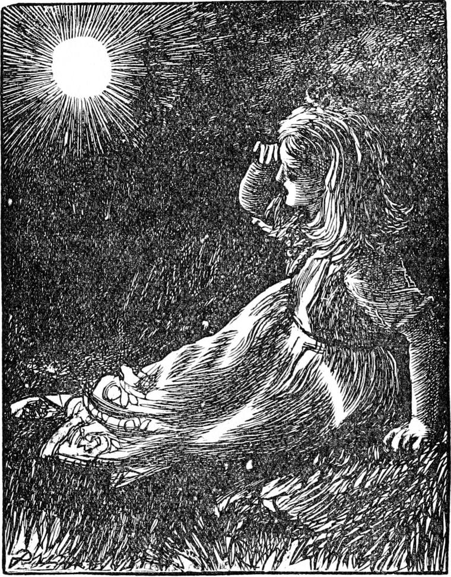

During the whole of the week Irene had been thinking every other moment of her promise to the old lady, although even now she could not feel quite sure that she had not been dreaming. Could it really be that an old lady lived up in the top of the house, with pigeons and a spinning-wheel, and a lamp that never went out? She was, however, none the less determined, on the coming Friday, to ascend the three stairs, walk through the passages with the many doors, and try to find the tower in which she had either seen or dreamed her grandmother.
Her nurse could not help wondering what had come to the child—she would sit so thoughtfully silent, and even in the midst of a game with her would so suddenly fall into a dreamy mood. But Irene took care to betray nothing, whatever efforts Lootie might make to get at her thoughts. And Lootie had to say to herself: 'What an odd child she is!' and give it up.
At length the longed-for Friday arrived, and lest Lootie should be moved to watch her, Irene endeavoured to keep herself as quiet as possible. In the afternoon she asked for her doll's house, and went on arranging and rearranging the various rooms and their inhabitants for a whole hour. Then she gave a sigh and threw herself back in her chair. One of the dolls would not sit, and another would not stand, and they were all very tiresome. Indeed, there was one would not even lie down, which was too bad. But it was now getting dark, and the darker it got the more excited Irene became, and the more she felt it necessary to be composed.
'I see you want your tea, princess,' said the nurse: 'I will go and get it. The room feels close: I will open the window a little. The evening is mild: it won't hurt you.'
'There's no fear of that, Lootie,' said Irene, wishing she had put off going for the tea till it was darker, when she might have made her attempt with every advantage.
I fancy Lootie was longer in returning than she had intended; for when Irene, who had been lost in thought, looked up, she saw it was nearly dark, and at the same moment caught sight of a pair of eyes, bright with a green light, glowering at her through the open window. The next instant something leaped into the room. It was like a cat, with legs as long as a horse's, Irene said, but its body no bigger and its legs no thicker than those of a cat. She was too frightened to cry out, but not too frightened to jump from her chair and run from the room.
It is plain enough to every one of my readers what she ought to have done—and indeed, Irene thought of it herself; but when she came to the foot of the old stair, just outside the nursery door, she imagined the creature running up those long ascents after her, and pursuing her through the dark passages—which, after all, might lead to no tower! That thought was too much. Her heart failed her, and, turning from the stair, she rushed along to the hall, whence, finding the front door open, she darted into the court pursued—at least she thought so—by the creature. No one happening to see her, on she ran, unable to think for fear, and ready to run anywhere to elude the awful creature with the stilt-legs. Not daring to look behind her, she rushed straight out of the gate and up the mountain. It was foolish indeed—thus to run farther and farther from all who could help her, as if she had been seeking a fit spot for the goblin creature to eat her in his leisure; but that is the way fear serves us: it always sides with the thing we are afraid of.
The princess was soon out of breath with running uphill; but she ran on, for she fancied the horrible creature just behind her, forgetting that, had it been after her such long legs as those must have overtaken her long ago. At last she could run no longer, and fell, unable even to scream, by the roadside, where she lay for some time half dead with terror. But finding nothing lay hold of her, and her breath beginning to come back, she ventured at length to get half up and peer anxiously about her. It was now so dark she could see nothing. Not a single star was out. She could not even tell in what direction the house lay, and between her and home she fancied the dreadful creature lying ready to pounce upon her. She saw now that she ought to have run up the stairs at once. It was well she did not scream; for, although very few of the goblins had come out for weeks, a stray idler or two might have heard her. She sat down upon a stone, and nobody but one who had done something wrong could have been more miserable. She had quite forgotten her promise to visit her grandmother. A raindrop fell on her face. She looked up, and for a moment her terror was lost in astonishment. At first she thought the rising moon had left her place, and drawn nigh to see what could be the matter with the little girl, sitting alone, without hat or cloak, on the dark bare mountain; but she soon saw she was mistaken, for there was no light on the ground at her feet, and no shadow anywhere. But a great silver globe was hanging in the air; and as she gazed at the lovely thing, her courage revived. If she were but indoors again, she would fear nothing, not even the terrible creature with the long legs! But how was she to find her way back? What could that light be? Could it be—? No, it couldn't. But what if it should be—yes—it must be—her great-great-grandmother's lamp, which guided her pigeons home through the darkest night! She jumped up: she had but to keep that light in view and she must find the house. Her heart grew strong. Speedily, yet softly, she walked down the hill, hoping to pass the watching creature unseen. Dark as it was, there was little danger now of choosing the wrong road. And—which was most strange—the light that filled her eyes from the lamp, instead of blinding them for a moment to the object upon which they next fell, enabled her for a moment to see it, despite the darkness. By looking at the lamp and then dropping her eyes, she could see the road for a yard or two in front of her, and this saved her from several falls, for the road was very rough. But all at once, to her dismay, it vanished, and the terror of the beast, which had left her the moment she began to return, again laid hold of her heart. The same instant, however, she caught the light of the windows, and knew exactly where she was. It was too dark to run, but she made what haste she could, and reached the gate in safety. She found the house door still open, ran through the hall, and, without even looking into the nursery, bounded straight up the stair, and the next, and the next; then turning to the right, ran through the long avenue of silent rooms, and found her way at once to the door at the foot of the tower stair.

When first the nurse missed her, she fancied she was playing her a trick, and for some time took no trouble about her; but at last, getting frightened, she had begun to search; and when the princess entered, the whole household was hither and thither over the house, hunting for her. A few seconds after she reached the stair of the tower they had even begun to search the neglected rooms, in which they would never have thought of looking had they not already searched every other place they could think of in vain. But by this time she was knocking at the old lady's door.